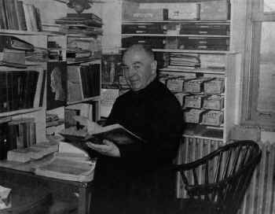

|

|

|
|
La majeure
partie des données
généalogiques du site des Charette viennent de l'œuvre du Frère
Jean-Benoît Charette. Pour la quatrième génération de notre
lignée, selon Frère Benoît, notre ancêtre est "Jean-Pierre-François".
En fait, il s'agit de Pierre, comme le nomme
plusieurs autres sources. Mais est-ce vraiment le cas?
Dès le début de l'étude de cette génération, une boîte à surprises s'est
ouverte. En faisant des recherches web sur la conjointe de
Pierre, une Marie Lemay, j'ai trouvé une Marie-Anne Lemay mariée à un
Joseph Choret, fils de Pierre Choret et d'Angélique Turcot. Donc,
Joseph et Pierre sont
frères!!! Mais d'où sort ce Joseph, dont jamais Frère Benoît ne fait
mention? Voilà la question, et, surtout, descendons-nous de Pierre
ou de Joseph? Regardons les faits... plutôt les actes de
baptême, mariage ou sépulture disponibles dans le Fonds numérisé
Drouin, ou d'autres banques de données comme le PRDH, et le BMS.

|
Troisième génération
Pierre Choret épouse à Charlesbourg, le 1
février 1712, Angélique Turcot.
Seuls deux de leurs fils atteignent l'âge adulte, Pierre et Joseph.
Les frères Choret épousent des sœurs Lemay.
|
|
|
|
|
Quatrième génération
Pierre Choret
Né le 13 septembre 1716
à Charlesbourg .
Mariage le 8 janvier 1742
à Sault-au-Récollet
avec Marie Lemay.
Décédé le 2 octobre 1755 à
Sault-au-Récollet, et inhumé le 4 octobre.
|
Quatrième génération
Joseph Choret
Né le 25 septembre 1719
à Notre-Dame de Montréal.
Mariage le 8 janvier 1742
à Sault-au-Récollet
avec Marie-Anne Lemay
Décédé le 29 août 1792 à
Sault-au-Récollet, et inhumé le 30 août..
|
|
N.B. Marie et Marie-Anne Lemay sont deux sœurs, filles de Ignace
Lemay Delorme et d'Anne Marie Jeanne Lecompte Lavimodière
(l'orthographe varie selon les sources).
Chaque couple a un fils prénommé Jean-Baptiste.
Les cousins Choret
épousent des sœurs Lorain.
|
|
|
|
|
Cinquième génération
Jean-Baptiste
(Louis)
Né le 10 mai 1752 à Sault-au-Récollet. Mariage le 3 février
1783 à Rivière-des-Prairies avec Marie-Louise Lorain, fille de
Paul et de Marie-Joseph Rangé.
Jean-Baptiste
aurait vécu sous le nom de Louis (Réf::PRDH),
nous avons son acte de mariage sous ce prénom. Nous avons aussi
le contrat de mariage passé devant le notaire A. Foucher, le 25
janvier 1783.
|
Cinquième génération
Jean-Baptiste
Né le 23 mars 1749 à Sault-au-Récollet. Mariage le 13 octobre 1774 à Rivière-des-Prairies avec Marie-Josephte Lorain, fille de Paul et de Marie-Joseph
Rangé.
Les
registres de la paroisse Rivière-des-Prairies pour les années
1771 à 1774 sont manquantes. Nous avons, par contre, le contrat
de mariage passé devant le notaire Jean-Marie Chatellier, le 12
octobre 1774.
|

la
bonne piste...
Si nous prenons la lignée Charette de manière
ascendante, plutôt que descendante, nous savons que notre ancêtre de la
cinquième génération est Jean-Baptiste Chauret, époux de
Marie-Josephte Lorrain.
Mais, comment savoir si ce Jean-Baptiste est le fils de Joseph ou de
Pierre? En consultant les registres d'état
civils disponibles et les contrat notariés, obtenus aux Archives
Nationales, nous pouvons affirmer que notre ancêtre de la quatrième
génération est JOSEPH.
Donc, pour cette génération,
et la suivante, nous ne
pouvions nous fier aux données du Frère Benoît car, non seulement il attribue
les deux enfants prénommés Jean-Baptiste à Pierre, mais il mêle les conjointes de
chacun d'eux. Il y a confusion entre Pierre ou Joseph, à la quatrième
génération, mais aussi entre les Jean-Baptiste, et leurs épouses, de la
cinquième génération.
Dans ce site web
consacré à la quatrième génération Charette en Amérique,
vous trouverez aussi des informations sur Pierre
puisque lui et son frère Joseph, notre ancêtre direct, sont intimement liés.
|
|

 Jean-Benoît
Charette, s.c. , consacre
une partie de sa vie à la généalogie. Il publie des répertoires
de mariages de différentes paroisses, surtout dans la région de
Valleyfield, et, en 1953, l'histoire de son village natal, l'Annonciation.
Mais, son oeuvre maîtresse est la
"Généalogie des Charette", publiée en 1968.
Dans l'introduction de ce
livre, frère Benoît écrit: "À celui qui s'informerait du temps
que j'ai mis à composer ce volume je répondrais sans hésiter:
"Cinq ans de recherches et soixante et dix ans d'attachement à ma
famille, d'intérêt aux établissements fondés par mes ancêtres, à
leur mode de vie et à leur petite histoire." Plus loin, il mentionne: "Cette généalogie de la
famille est nécessairement incomplète, parce que je n'ai pas consulté
tous les registres de la province ou d'ailleurs; des réponses que
j'attendais ne sont pas venues; dans X..... années un autre chercheur de
la famille continuera ce travail , qui pratiquement n'a pas de
fin. Involontairement il
s'est glissé des erreurs, des oublis, dus à des distractions, à des
inattentions ...."
Frère Benoît a deux handicaps
majeurs pour
bien gérer la quatrième génération:
il ignore
l'existence de Joseph, et la date de décès de Pierre.
Joseph Choret naît le 25 septembre 1719 dans la
paroisse Notre-Dame de Montréal. Or, à la décharge du Frère
Benoît, les registres de cette paroisse sont énormes
et difficiles à consulter.
Pour ajouter à la confusion, les deux frères Choret, Pierre et Joseph,
épousent
le 8 janvier 1742 deux sœurs Lemay. Considérant
que les prénoms des épouses Lemay varient selon les documents, tantôt
on parle de Marie, de Marie-Anne, de Marianne, de Marie Catherine, et
d'autres...
les recherches généalogiques se compliquent..
Une autre
donnée importante manque au généalogiste : la
date de décès de Pierre,
soit le 2 octobre 1755 à Sault-au-Récollet. Frère
Benoît le fait décéder le 30 août 1793, mais cette date serait plutôt
celle du décès de Joseph, d'autres sources disent 1792. S'il avait su cela, il aurait
compris que les enfants nés après 1755 avaient nécessairement un autre
père... et il aurait cherché d'autres pistes...

 Frère
Benoit a participé au Petit Drouin. Frère
Benoit a participé au Petit Drouin.
Il s'agit d'un répertoire des mariages catholiques
du Québec de 1760 à 1825. La série comprend un groupe de 23 tomes
avec les mariages par ordre des hommes, et un index par les femmes
faisant 5 tomes. Le
Petit Drouin est un instrument de recherche essentiel pour les
généalogistes, on le retrouve aux Archives Nationales.
|
|
|
 |
|
(1) Jean-Baptiste
Decogne.
Note ajoutée par Frère Benoît: "On peut facilement allier ce nom
de famille: Decogne au nom de la paroisse Notre-Dame de Cogne, ville de La
Rochelle" où s'est marié le premier ancêtre Mathieu Choret et d'où il
est parti pour la Nouvelle-France. Retour au texte
(2) Jean-Baptiste Chorel dit
Saint-Romain est le fils de Jean-Baptiste St-Romain, originaire de
France. Ce dernier avait épousé Marie-Madeleine Dubé le 9
février 1728 à Charlesbourg. Leur fils Jean-Baptiste, né le 28
janvier 1733 à Montréal, épouse à St-Laurent le 23 février 1756
Marie-Jeanne Aubry, veuve de Charles Jérôme. Lorsqu'il est
parrain du fils de Pierre Choret en 1752, il est donc encore célibataire.
(données extraites du Dictionnaire Tanguay). Retour au texte
|
|